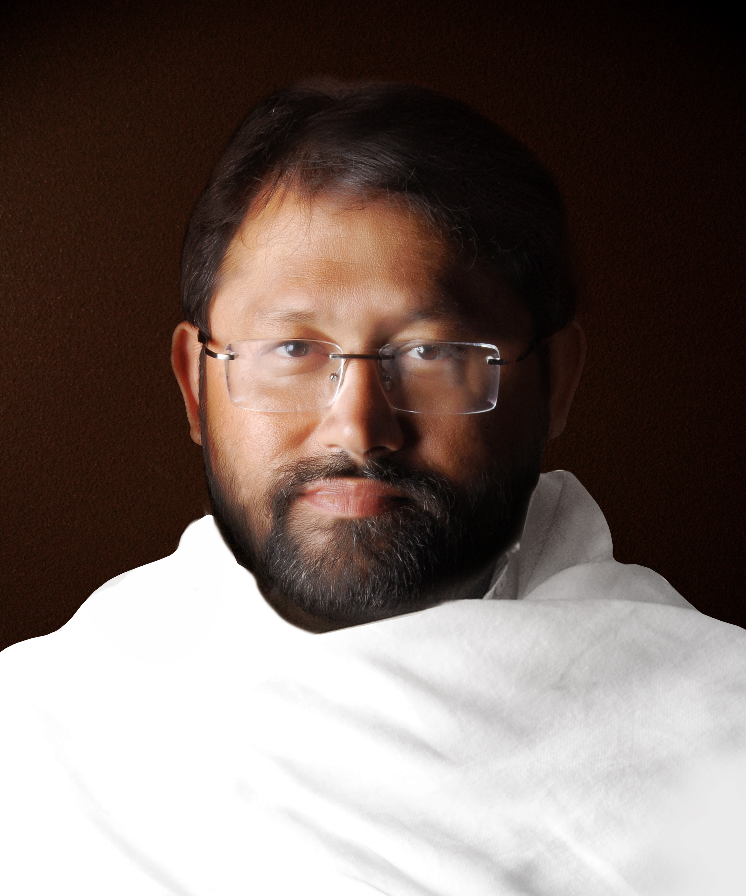

Pujya Gurudevshri Rakeshji was born on September 26, 1966, in Mumbai. From the tender age of 8, He displayed an extraordinary spiritual temperament, naturally drawn to deep meditation and extended periods of silence. These early signs of spiritual depth set Him apart and foreshadowed His future role as a guide to countless seekers.
Contents Hide
Pujya Gurudevshri Rakeshji
| Pujya Gurudevshri Rakeshji | |
|---|---|
|
 |
|
| Born | September 26, 1966, Mumbai |
| Also called | 'Gurudev', 'Saheb', 'Bapa' |
| Education | Ph.D. from Mumbai University (1997) on Atmasiddhi Shastra |
| Founded | Shrimad Rajchandra Adhyatmik Satsang Sadhana Kendra (March 10, 1994) |
| Ashram | Shrimad Rajchandra Ashram, Dharampur (2001) |
| Original book | 'Shrimad Rajchandra – Jeevan ane Kavan' (Gujarati, 2001) |
| Significance | Spiritual guide; author of the biography on which this website is based |
Pujya Gurudevshri Rakeshji (also known as 'Gurudev', 'Saheb', and 'Bapa') was born on September 26, 1966, in Mumbai. From the age of 8, He was immersed in deep meditation and silence, displaying extraordinary spiritual inclinations from childhood. He earned a Ph.D. from Mumbai University in 1997 for His thesis on Param Krupalu Dev's crown jewel composition, the Atmasiddhi Shastra. He founded the Shrimad Rajchandra Adhyatmik Satsang Sadhana Kendra on the auspicious day of Maha Shivratri, March 10, 1994, and later established Shrimad Rajchandra Ashram in Dharampur in 2001. He is the author of 'Shrimad Rajchandra – Jeevan ane Kavan', the Gujarati biography whose English translation 'Saga of Spirituality' forms the basis of this entire website.
Early life
Scholarship & Research
Pujya Gurudevshri Rakeshji pursued rigorous academic study of Param Krupalu Dev's teachings alongside His spiritual practice. In 1997, He was awarded a Ph.D. from Mumbai University for His doctoral thesis on the Atmasiddhi Shastra — Param Krupalu Dev's magnum opus of 142 verses that encapsulates the six fundamental truths of spiritual philosophy. This scholarly engagement with Param Krupalu Dev's works gave Him a unique depth of understanding that He brings to His spiritual discourses and writings.
Founding of Satsang Kendra
On the auspicious occasion of Maha Shivratri, March 10, 1994, Pujya Gurudevshri Rakeshji founded the Shrimad Rajchandra Adhyatmik Satsang Sadhana Kendra. This centre became the institutional foundation for the study, practice, and dissemination of Param Krupalu Dev's teachings, creating a living bridge between Param Krupalu Dev's 19th-century spiritual legacy and contemporary seekers.
Shrimad Rajchandra Ashram, Dharampur
In 2001, Pujya Gurudevshri Rakeshji established Shrimad Rajchandra Ashram at Dharampur, set amidst 223 acres on the hillock of Mohangadh. This ashram serves as the spiritual headquarters of the mission, providing a serene environment for meditation, study, and spiritual retreats. It stands as a living monument to Param Krupalu Dev's teachings, welcoming seekers from across the world.
Literary contributions
Pujya Gurudevshri Rakeshji authored 'Shrimad Rajchandra – Jeevan ane Kavan' in Gujarati in 2001 — a comprehensive biography of Shrimad Rajchandraji that draws upon the compilation 'Shrimad Rajchandra', historical records, and the accounts of devotees. This work was translated into English by Sharnarpit Renu Jhaveri as 'Shrimad Rajchandra – Saga of Spirituality' (published 2014, ISBN 978-81-929141-1-4). It is this English translation that serves as the primary reference source for this entire website.